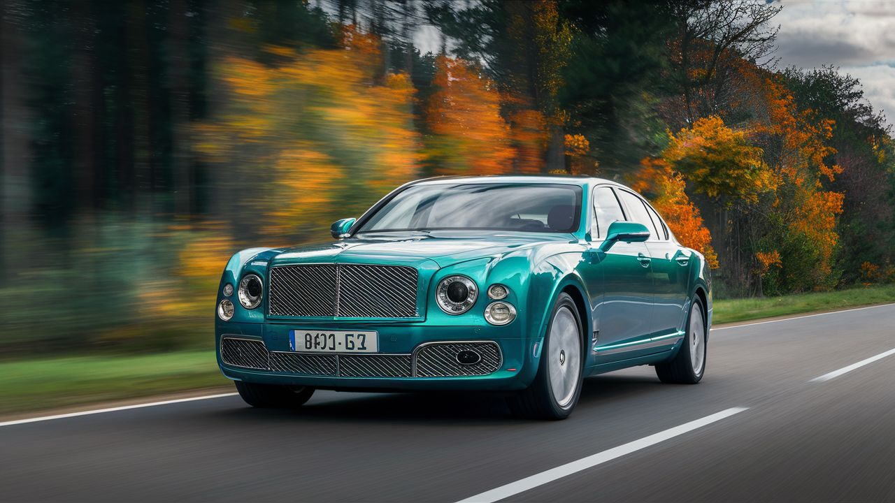

Bentley
Bentley Motors Limited es una marca británica de automóviles de lujo fundada en 1919 por Walter Owen Bentley. Con una larga historia en la fabricación de vehículos premium, Bentley se destaca por su compromiso con la excelencia artesanal y el lujo. La marca ofrece una amplia gama de modelos que incluyen SUVs como el Bentayga, sedanes como el Flying Spur, y deportivos como el Continental GT2. . A lo largo de los años, Bentley ha participado en competiciones automovilísticas destacadas como las 24 Horas de Le Mans, donde ha tenido logros significativos. Actualmente, la marca se mantiene en la vanguardia del lujo y la tecnología en la industria automotriz, con modelos que combinan elegancia, altas prestaciones y un diseño distintivo3 . Bentley ha experimentado cambios significativos a lo largo de su historia, desde su adquisición por Rolls-Royce en los años treinta hasta su posterior compra por el Grupo Volkswagen, lo que marcó una nueva etapa en el diseño y desarrollo de sus vehículos. Modelos icónicos como el Continental GT han demostrado la capacidad de Bentley para combinar lujo y rendimiento en un paquete elegante y sofisticado
Modelos destacados
Bentley Mulsanne

Motor: V8 de 6.75 litros o V8 de 6.75 litros Twin-Turbo Potencia: 505 - 530 caballos de fuerza Aceleración (0-100 km/h): 5.3 - 5.5 segundos Características: Diseño elegante, artesanía meticulosa, tecnología avanzada de confort y seguridad. Precio: Desde aproximadamente $300,000 USD.
Bentley Continental GT
Motor: V8 de 4.0 litros Twin-Turbo o W12 de 6.0 litros Twin-Turbo Potencia: 542 - 626 caballos de fuerza Aceleración (0-100 km/h): 3.6 - 4.0 segundos Características: Gran turismo de lujo, diseño icónico, rendimiento excepcional. Precio: Desde aproximadamente $202,000 USD.
Bentley Bentayga
Motor: V8 de 4.0 litros Twin-Turbo o W12 de 6.0 litros Twin-Turbo Potencia: 542 - 600 caballos de fuerza Aceleración (0-100 km/h): 3.9 - 4.5 segundos Características: SUV de lujo, comodidad superior, tecnología avanzada, capacidad todoterreno. Precio: Desde aproximadamente $180,000 USD